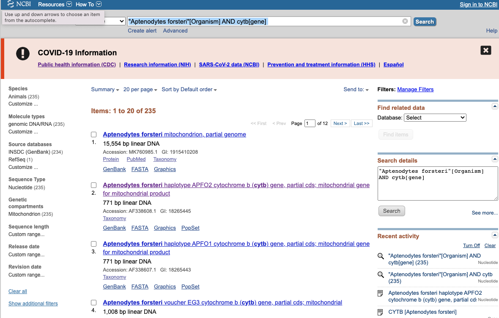
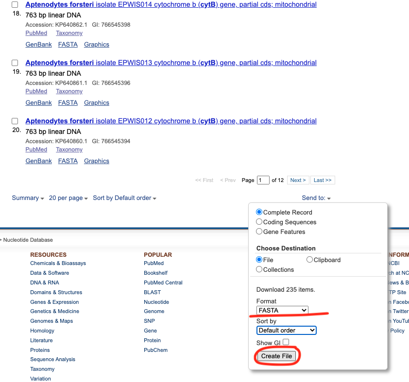
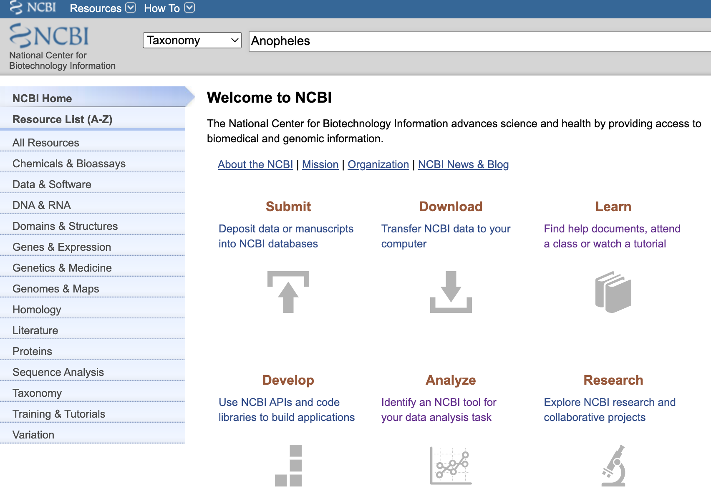
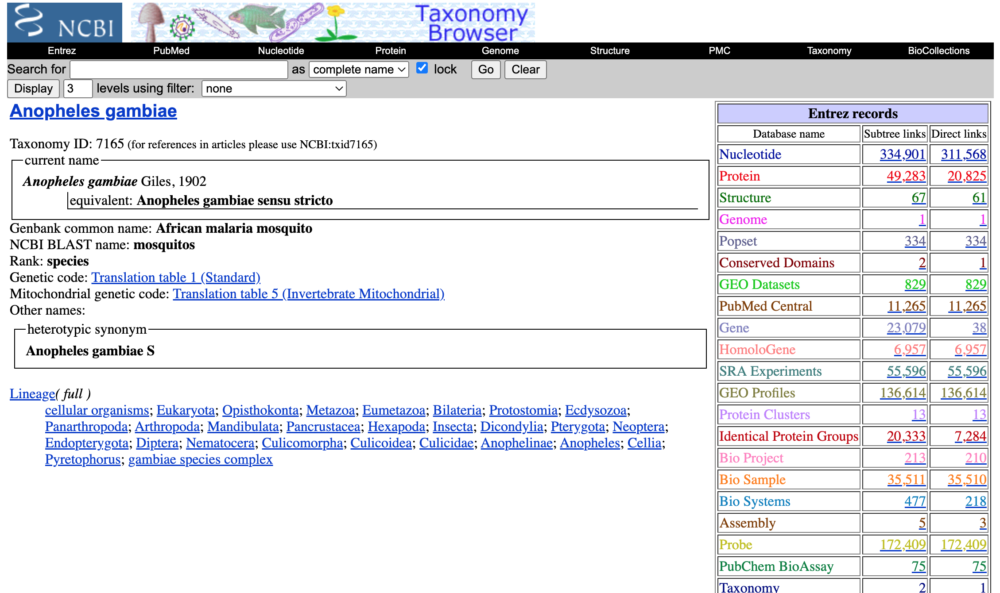
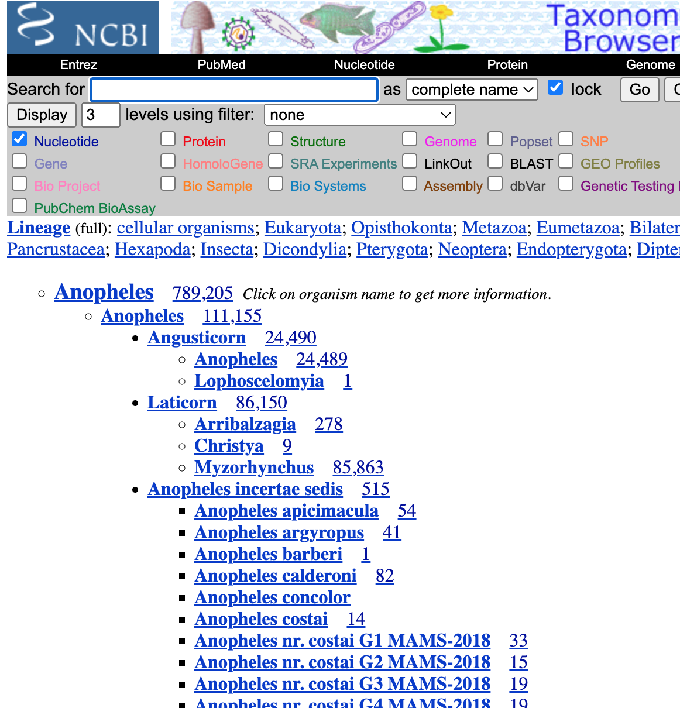
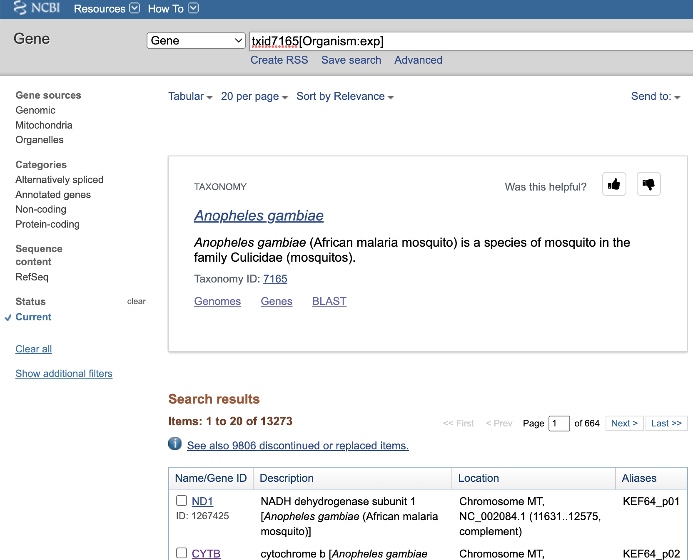
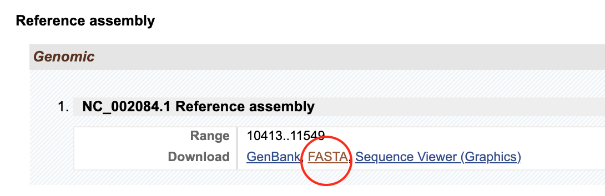
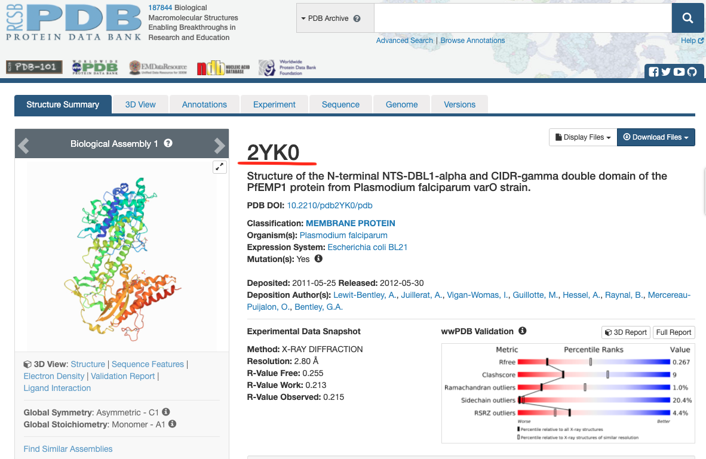
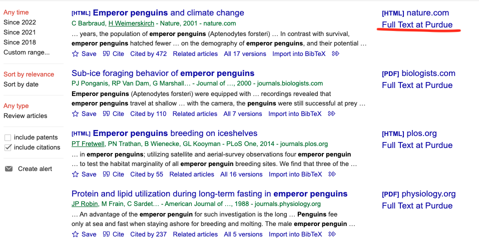

Chapter 13 Resources and Guidelines for the Term Project
13.1 Bioinformatics Databases
13.1.1 NCBI (National Center for Biotechnology Information)
NCBI is where most of the genetic/genomic resources are deposited. Most of the journals require the authors to deposit newly generated genomic resources upon publication. NCBI contains many databases and sequence analysis tools. Some of the key databases that are most relevant to your project are listed as below:
GenBank : an annotated collection of all publicly available DNA sequences. GenBank is part of the International Nucleotide Sequence Database Collaboration, which comprises the DNA DataBank of Japan (DDBJ), the European Nucleotide Archive (ENA), and GenBank at NCBI. These three organizations exchange data on a daily basis. This is where you may find available genetic information for the species/populations of interest.
RefSeq : annotated set of non-redundant reference sequences including genomic, transcript, and protein.
Example: we would like to download cytochromeB sequences from Emporer penguins search term:
"Aptenodytes forsteri"[Organism] AND cytb[gene]

Search results can be saved to a fasta file with all the sequence info.

First few lines of the fasta file:
>AF338608.1 Aptenodytes forsteri haplotype APFO2 cytochrome b (cytb) gene, partial cds; mitochondrial gene for mitochondrial product
ACAGGCATTATCCTCCTACTCACCCTCATGGCAACCGCCTTCGTAGGCTACGTCCTACCATGAGGACAAA
TATCTTTCTGAGGAGCCACAGTCATTACCAACTTATTCTCAGCCATCCCTTACATTGGCCAAACCCTCGT
AGAATGGACCTGAGGTGGCTTTTCAGTAGACAACCCCACATTAACCCGATTTTTCGCACTACACTTCCTC
CTTCCCTTCATAATCGCAGGCCTCACCCTCATCCACCTCACCTTCCTCCACGAATCAGGCTCAAATAACC
CACTGGGCATCGTAGCTAACTCCGATAAAATCCCATTCCACCCCTACTACTCCACAAAAGACATCCTAGG
ATTCGCACTCATACTTCTCCCACTAACAACCCTTGCCCTATTCTCCCCCAACCTACTAGGAGACCCAGAA
AACTTCACCCCAGCAAACCCACTAGTCACACCCCCACACATCAAACCAGAATGATACTTCCTATTTGCAT
ACGCTATCCTACGCTCAATCCCCAACAAACTAGGAGGAGTCCTTGCCCTAGCAGCATCCGTGCTAATCCT
ATTCCTAATCCCTCTCCTCCACAAATCCAAGCAACGCACAATAGCTTTCCGCCCTCTCTCCCAACTCCTA
TTCTGAGCCCTAGTAGCCAATCTCATTATCCTAACATGAGTAGGTAGCCAACCAGTAGAACACCCCTTCA
TCATCATCGGCCAACTAGCCTCCCTCACTTACTTCACCACCCTCCTGATCCTCTTCCCCATTGCTGGGGC
C
>AF338607.1 Aptenodytes forsteri haplotype APFO1 cytochrome b (cytb) gene, partial cds; mitochondrial gene for mitochondrial product
ACAGGCATTATCCTCCTACTCACCCTCATGGCAACCGCCTTCGTAGGCTACGTCCTACCATGAGGACAAA
TATCTTTCTGAGGAGCCACAGTCATTACCAACTTATTCTCAGCCATCCCTTACATTGGCCAAACCCTCGT
AGAATGGGCCTGAGGTGGCTTCTCAGTAGACAACCCCACATTAACCCGATTTTTCGCACTACACTTCCTC
CTTCCCTTCATAATCGCAGGCCTCACCCTCATCCACCTCACCTTCCTCCACGAATCAGGCTCAAATAACC13.2 Retrieving genetic resources for your taxa
13.2.1 NCBI taxonomy database
- Go onto ncbi website, type the species/genus/family you are interested and select
taxonomydatabase.

- You can type a specific species name to get an idea of all the available data for the taxon, or you can specify a higher level (e.g., genus or family) to know the overall richness of genetic resources per species


- Select the appropriate set of species you plan to focus on based on the abundance of their genetic resources
13.2.2 Individual genes from the whole genome data
Go to the Gene database in NCBI and search for the taxon you are interested that has a genome annotated. On the left panel, you can choose different chromosomes and the type of genes you are interested. Click the gene you are interested in. In the new page, scroll down to the section where you can specify the format of the gene you’d like to download.


13.2.4 European Bioinformatics Institute (EBI)
In addition DNA/RNA sequences information, EBI is a valuable database for protein sequences and structural information.
- UniProt: provides the scientific community with a comprehensive, high quality and freely accessible resource of protein sequence and functional information.
13.2.5 Protein Data Bank
PDBe harbors the 3D shapes of proteins, nucleic acids and complex assemblies. Each protein has a unique four-digit code. Structural information might be useful in sequence alignment across different species where pairs of amino acids or nucleotides form bond and their mutational patterns are interdependent.

13.3 Biogeographic Databases
13.3.1 Climate Data
- WorldClim: contains historic and present climate data measured by 19 bioclimatic variables. Paleo climatic data at a resolution of 30-seconds is available here: https://www.worldclim.org/data/v1.4/paleo1.4.html
- LGM, 22000 before present
- Mid-Holocene, 6000 before present
- CHELSA: similar to WorldClim, but has better coverage of monthly/daily historic timeseries.
13.3.2 Occurrence Data
- GBIF: Global Biodiversity Information Facility
- Largest aggregator of primary biodiversity data.
- Data served in DarwinCore format (https://dwc.tdwg.org/terms/)
- Comprises the
locations and datesof when and where organisms have been observed/collected. - Comprises various data sources (e.g., natural history collections, citizen science observations, remotely sensed data).
- Not all records are complete (e.g., no coordinate data) and many are biased/incorrect/inaccurate to various degrees.
- iDigBio: Integrated Digitized Biocollections
- only natural history collections
specimen imagesin addition tolocations and dates- shares data with GBIF but there are lags
- iNaturalist:
- only citizen science observations
- contains
co-ordinate data - Shares subset of ‘research grade’ data with GBIF but there are lags.
13.3.3 TOPOGRAPHIC DATA
- USGS: mapping remote sensing and geospatial data
- FAO Soils Portal: soil classification data
13.4 Publication Databases
- Google Scholar: in the settings, search for purdue library as a proxy. Full text will be available for most of the papers if our library has a subscription to it.

- PubMed: Part of NCBI. Most of the NIH funded studies are freely available on this platform.
13.5 Example research questions:
13.5.1 Biogeography and Phylogenetic Diversity:
- Where are the most phylogenetically diverse areas of woody plants?
- Why the tropics have a higher PD than the poles of the Earth?
- How did the formation of the land bridge between North and South America hav e on marine and terrestrial species?
- Why are certain areas more phylogenetically diverse than others?
- Is phylogenetic diversity reflective of functional diversity?
- Does the phylogenetic diversity of a community influence its invasibility?
- Does phylogenetic diversity predict ecosystem productivity?
- Does phylogenetic diversity buffer ecosystem function against change?
- Have certain regions/lineages experienced rapid diversification?
- How do invasive species affect phylogenetic diversity?
13.5.2 Community Ecology:
- Is the distribution of species among habitats (or samples) in a community nonrandom with respect to phylogeny? Why?
- How are niche differences in communities arrayed on a phylogeny?
- How does the phylogenetic structure of communities differ across scale?
- How does the phylogenetic structure of communities change across time (e.g., succession)?
- Does phylogenetic relatedness predict invasion success?
- How do abiotic conditions influence the phylogenetic structure of communities?
13.6 How to submit jobs on Scholar Cluster and run remotely
Instruction of mounting the remote home directory onto your local computer: https://www.rcac.purdue.edu/knowledge/scholar/storage/transfer/cifs
Example submission sbatch file and script are provided on scholar cluster:
/class/heqixin/data/labs/scholarJobSub
13.7 Term project proposal
- No more than two pages
- Please check
BrightSpace -> term project resources -> proposal guidelinesfor proposal examples and grading rubrics. - Must find/download sequence data, align, do model selection, and generate your own phylogenies with support values.
- Must use the generated phylogenies to test a hypothesis and/or answer relevant questions.
- At least 10 OTUs of focal taxa (excluding the outgroup).
- More than one gene/locus if the question is to estimate a species tree.
- Proposal format:
- Title
- Aim
- Location
- Major taxa/certain populations within taxa/Gene families
- Background
- Hypotheses
- Proposed Methods
- focus on how you are going to use the phylogeny to test your hypotheses
- utilize the packages and functions we practiced in the phylogenetic application labs
- different methodologies not taught in the class are welcome
- No need of including specific phylogenetic inference methods (as we will learn them in the latter half of the course)